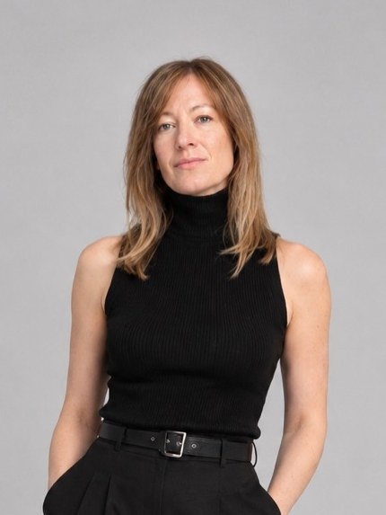

Ирина ЖуравлеваIrina Zhuravleva
Русский, французский, испанский и английский — для детей, подростков и взрослых, в группах и индивидуально, очно и онлайн.Russian, French, Spanish and English for children, teenagers and adults, in groups and one-to-one, in person and online.

Русский — мой родной язык. Я окончила переводческий факультет Московского государственного лингвистического университета (французский и испанский) и факультет журналистики Московского международного университета.
Russian is my native language. I graduated from Moscow State Linguistic University with a degree in Translation and Interpreting (French and Spanish) and hold a second degree in Journalism from Moscow International University.
Больше десяти лет я преподаю языки: в языковой школе YES в Королёве, где занималась с учениками от 6 до 70 лет, затем частным образом. Сейчас живу в Лондоне, преподаю русский язык детям 5–10 лет в субботней школе и веду онлайн-занятия по французскому.
I have been teaching languages for more than ten years: at YES Language School in Korolyov, with learners aged 6 to 70, and then as a private tutor. I now live in London, where I teach Russian to children aged 5–10 at a Saturday school and give online French lessons.
На уроках я использую коммуникативный подход: ученики с первых занятий говорят на изучаемом языке, а программа подстраивается под их возраст, цели и темп.
I use a communicative approach: learners speak the target language from the first lessons, and the course adapts to their age, goals and pace.
Не бойтесь ошибаться — говорите смелее!Don't be afraid to make mistakes — speak up!
Учим, говорим, думаем на новом языкеLearn it, speak it, think in it
Чему я учуWhat I teach
РусскийRussian
Дети 5–10 лет в Лондоне: устная речь, чтение и письмо в небольших группах.
Children aged 5–10 in London: speaking, reading and writing in small groups.
ФранцузскийFrench
Дети, подростки и взрослые. Индивидуально и в группах, очно и онлайн.
Children, teenagers and adults. One-to-one and groups, in person and online.
ИспанскийSpanish
Общий курс для подростков и взрослых, акцент на разговорной практике.
General Spanish for teenagers and adults, with a focus on speaking practice.
АнглийскийEnglish
Общий английский и подготовка к экзаменам по методике Cambridge.
General English and exam preparation using Cambridge methodology.
Как проходят занятияHow lessons work
Говорим с первого урокаSpeaking from day one
Коммуникативная методика и максимум изучаемого языка на занятии.
Communicative methodology and as much target language as possible.
Урок под ученикаLessons that fit the learner
Учитываю возраст, уровень, цели и темп; адаптирую материалы.
I take age, level, goals and pace into account and adapt materials.
Доброжелательная атмосфераA supportive atmosphere
Ученики не боятся ошибаться и свободно высказывают мысли.
Learners feel safe to make mistakes and express their ideas.
Очно и онлайнIn person and online
Занятия в классе или по Microsoft Teams и Skype.
Classroom lessons or online via Microsoft Teams.
ПутьBackground
Преподаватель русского языкаRussian language teacher
Субботняя школа, Лондон. Дети 5–10 лет, группы по 6–8 человек.
Saturday school, London. Children aged 5–10, groups of 6–8.
Частный преподавательPrivate language tutor
Французский, испанский и английский для подростков и взрослых. С 2022 года — онлайн-занятия по французскому (Microsoft Teams, Skype).
French, Spanish and English for teenagers and adults. Online French lessons since 2022 (Microsoft Teams, Skype).
Языковая школа YES, КоролёвYES Language School, Korolyov
Французский, испанский и английский; группы и индивидуальные занятия; ученики от 6 до 70 лет.
French, Spanish and English; group and individual lessons; learners aged 6 to 70.
Московский международный университетMoscow International University
Факультет журналистики.
Degree in Journalism.
FM Logistic, переводчик французскогоFM Logistic, French translator
Письменный и устный перевод, деловая документация.
Written and oral translation, business documents.
Московский государственный лингвистический университетMoscow State Linguistic University
Переводческий факультет, французский и испанский языки.
Degree in Translation and Interpreting, French and Spanish.
Постоянно учусь самаAlways learning
Копии сертификатов и диплом DELE B2 (Институт Сервантеса, 2012) — по запросу.
Copies of certificates and the DELE B2 diploma (Instituto Cervantes, 2012) available on request.
Буду рада знакомствуI'd be glad to hear from you
…Лондон, ВеликобританияLondon, United Kingdom
★
UK